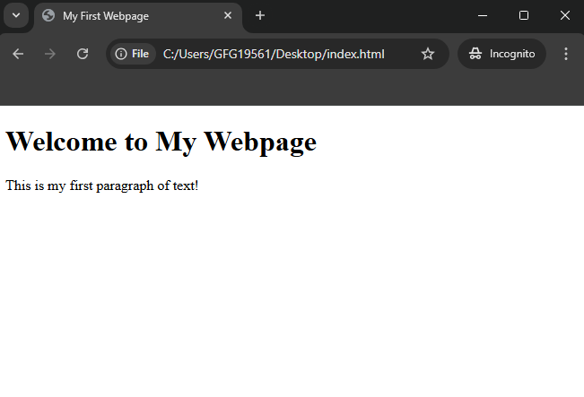

HTML Introduction
HTML stands for Hyper Text Markup Language, which is the core language used to structure content on
the web. It
organizes text, images, links, and media using tags and elements that browsers can interpret. As of 2025, over
95% of websites rely on HTML alongside CSS and JavaScript, making it a fundamental tool in modern web
development.
- It is a markup language, not a programming language. This means it annotates text to define how it is
structured and displayed by web browsers.
- It is a static language, meaning it does not inherently provide interactive features but can be
combined with CSS for styling and JavaScript for interactivity.
In a nutshell, HTML is all about organizing and displaying information on a webpage. We can think of it as the
bones or structure of a webpage.

HTML Page Structure
The basic structure of an HTML page is shown below. It contains the essential building-block elements (i.e.
doctype declaration, HTML, head, title, and body elements) upon which all web pages are created.

- <DOCTYPEhtml->This
is the document type declaration, not a tag. It declares that the document is an HTML5 document.
- <html->This is called the HTML root element. All
other elements are contained within it.
- <head->The head tag contains the "behind the scenes"
elements for a webpage. Elements within the head aren't visible on the front end of a webpage. Typical
elements inside the
include:
-
- <title->Defines the title displayed on the
browser tab.
- <meta->Provides information like the
character set or viewport settings.
- <link->Links external stylesheets or
resources.
- <style->Embeds internal CSS styles.
- <script->Embeds JavaScript for
functionality.
- <title->The title is what is displayed on the top of
your browser when you visit a website and contains the title of the webpage that you are viewing.
- <h2->The
h2 tag is a second-level heading tag.
- <p->The paragraph tag represents a paragraph of
text.
- <body->The body tag is used to enclose all the
visible content of a webpage. In other words, the body content is what the browser will show on the front
end.
An HTML document can be created using an HTML text
editor.Save the text file using the ".html" or ".htm" extension. Once saved as an HTML
document, the file can be opened as a webpage in the browser.
Note:Basic/built-in text editors are Notepad (Windows) and TextEdit
(MacOS). Other advanced text editors include Sublime Text, Visual Studio Code,
etc.
HTML Elements and HTML Tag
HTML Elements and HTML Tags are related but distinct. An HTML
element is the complete structure, including the opening tag, content (if any), and the closing tag (if
applicable).
On the other hand, A tag is the actual keyword or name enclosed in angle brackets (<>) that tells the
browser what kind of content to expect.

| Tag |
Description |
| <html> |
The root element of an HTML document |
| <head> |
Contains meta-information about the webpage |
| <body> |
Contains the visible content of the webpage |
| <h1 to h6>
|
Headings of various levels (h1 being the largest) |
| <p>
|
Defines a paragraph |
| <a> |
Defines a hyperlink |
| <img>
|
Embed an image |
| <ul> |
Defines an unordered list |
| <ol> |
Defines an ordered list |
| <li> |
Defines a list item |
| <table> |
Defines a table |
| <form> |
Defines an HTML form |
To learn more about it follow the article -HTML Tags
HTML Attributes
Attributes provide additional information about an element. They are placed inside the opening tag and are
written as name="value". Common attributes include class, id, href and src.
Example
To learn more about it follow the article - HTML
Attributes
Web Browser
Unlike other programming languages, HTML does not show output on the any compiler. Web browsers is an
compiler
which show the results of an your HTML code.
It reads HTML files and determines how to show content with the help of HTML tags. Any web browser (Google,
Safari,Mozilla Firefox, etc) can be used to open a . HTML
file and view the results.

Why Learn HTML?
Here are 5 common reasons to learn HTML:
- Build Websites: HTML is the basic building block for creating any website. Learning HTML can help you pursue a career in
web development.
- Customize Content:Allows you to edit or tweak web
pages, emails, or templates to fit your needs.
- Understand how the web works:This helps you grasp how the internet works and how web pages are
structured.
- Employment Opportunities:According to the Bureau of Labor Statistics, projects that employment for
web developers will grow 16% between 2022 and 2032, which is much faster than the average across all
occupations.
- Learn Easily:HTML is beginner-friendly, making it a great first step into the world of coding and
technology./li>
Applications of HTML
- Web Development: HTML is the backbone of every webpage. It structures the content and integrates
multimedia, hyperlinks, and more.HTML is the backbone of every webpage. It structures the content
and integrates multimedia, hyperlinks, and more.
- Web Applications:HTML, in combination
with CSS and JavaScript, powers complex web applications (e.g., Google Docs, Trello).
- Emails: HTML emails use table-based layouts and embedded media to deliver rich, interactive content.
- Mobile App Development:HTML5 is
used with frameworks like PhoneGap to build mobile apps for iOS and Android.
Limitations of HTML
- No Logic or Functionality: HTML cannot handle complex logic, interactivity, or dynamic content on its
own. It requires JavaScript for such tasks.
- SEO Limitations: While HTML provides structure, it’s
not enough by itself for search engine optimization (SEO). Proper metadata and content structuring, as well
as external SEO practices, are necessary.
- Limited Styles: While HTML can handle basic styles via the style attribute, it is typically
complemented by CSS for complex styling and layout.
HTML5: Enhancements and New Features
HTML 5
Introduced several powerful features that improve the structure and functionality of web pages,
including:
- SemanticsNew tags like article,footer,header,
and section to improve the meaning of the content.
- Multimedia:Audio andVediotags for embedding audio and video without plugins.
- API'S: New
APIs like Geolocation, Web Storage, and Canvas allow for more dynamic content and interactive websites.
HTML History
Currently, we are using HTML5 which is the latest and most
advanced version of HTML.
- HTML was initially created by Tim Berners-Lee in 1991 as a way to share and structure documents on
the web.
- The first-ever version was HTML 1.0, a basic and limited version. However, the first standardized
version, HTML 2.0, was published in 1995, laying the foundation for web development as we know it
today.

Conclusion
In conclusion, mastering HTML is a fundamental step in your web development journey. This guide serves as a
comprehensive resource for understanding HTML, from the basics to more advanced topics. Remember, HTML is more
than just a markup language - it’s a powerful tool for creating engaging, accessible, and SEO-friendly websites.
To learn more about HTML, visit the HTML Tutorial
Page.
Note: If you want to Master The Art of Web Development, Check out our Full
Stack Web Development Classroom